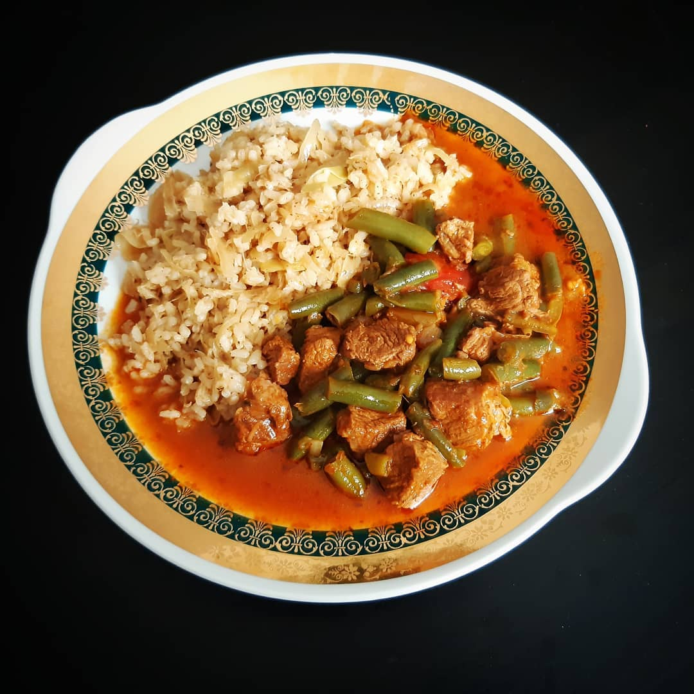

Kapustové rizoto podľa @jajfil — Normy Jedál
Etli yeşil fasulye - zelená fazuľka s hovädzím a Lahanali pilav ako príloha
-------------------------------------------------------------------------------
Inšpirácia z Tureckej kuchyne
Ingrediencie
500 g mrazená zelená fazuľka
500 g hovädzie predné
2 ks cibuľa
2 ks paprika zelená
5 ks paradajky alebo
200 ml lečo
1 čl mletá sladká červená paprika
⅓ čl čierne mleté korenie
½ čl rasca mletá
2 pl isot/piros alebo iná papriková pasta
soľ
20 g maslo
1 čl majorán
Postup
Mäso umyjeme a nakrájame na kocky. Cibuľu očistíme a v hrnci opražíme do zlatista na oleji. Pridáme mäso, pražíme kým za zatiahne. Pridáme mletú paprika, rascu, čierne korenie, soľ i paprikovú pastu asi 3 min. pražíme, podlejeme vodou a dusíme do mäkka. Prípadne v tlakovom hrnci 30 min. od dosiahnutia tlaku.
Keď je mäso mäkké prisypeme k nemu fazuľky, lečo, majorán a necháme variť aby fazuľky zmäkli, tak asi 5-7min. Dosolíme podľa chuti a zjemníme maslom.
Podávame s ryžou, zemiakovou kašou, šalatom alebo len s chlebíkom.
Ja som zvolila ako prílohu Lahanali pilav, čo je kapustove rizoto.
#cabbage#rice#cabbagerisotto#beef#greenbean#lunch#Turkishfood#recipe#Bonappetite#homecooking#kapusta#ryza#kapustoverizoto#hovadzie#zelenafazulka#obed#tureckejedlo#recept#dobruchut#domacevarenie#meal#food#jedlo#varimdoma#lunch#obed